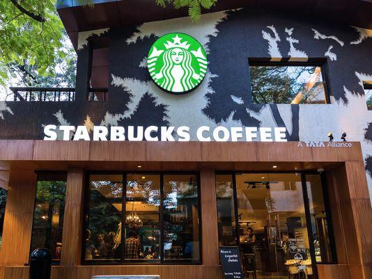
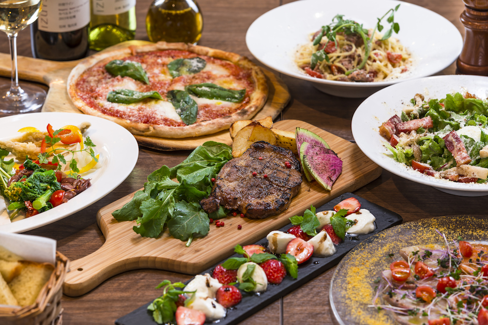
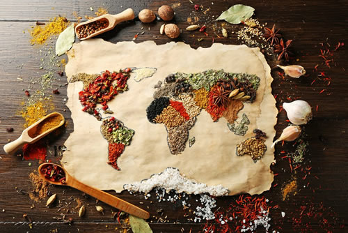
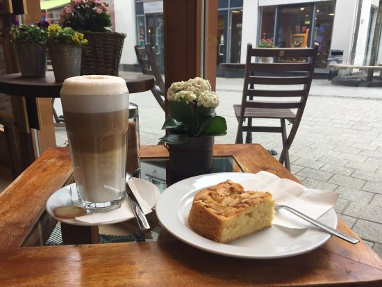

Vakantiepark X - Restaurants & Shops
Restaurants


Italiaania (Pizza & Pasta)
Menu:
Pizza (toppings naar keuzen)
Pasta met tomatensaus
Pasta met kaassaus
Pasta zonder saus
Met de keuze uit:
Rode wijn
Witte wijn
Ice tea

Wereldkeuken
Wok, Sushi & KBBQ


Café de Beren
De perfecte lunchgelegenheid!